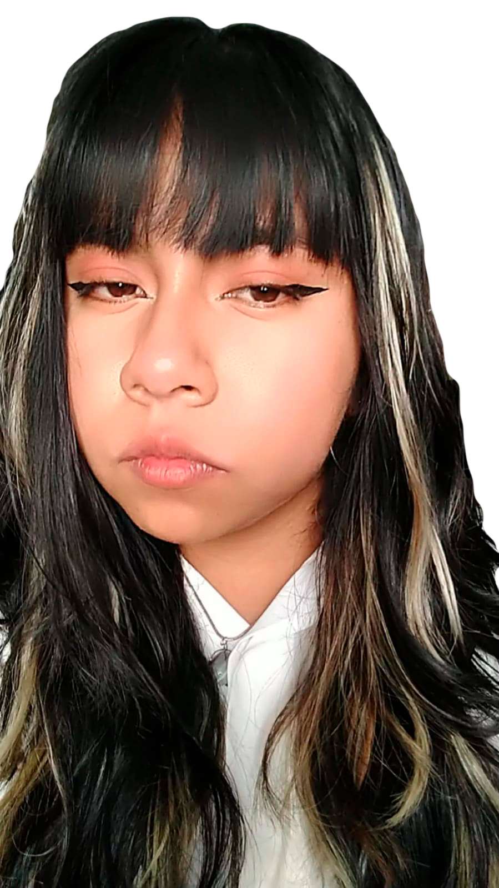

¿Quién soy yo?
Mi nombre es Beatriz Adriana Cortes Hernández pero me gusta más que me digan Adri, tengo 20 años de edad y estudio diseño gráfico, me gusta escuchar música de todos los géneros, también me gusta bailar y pintar.
Soy alguien extrovertida, carismática, alegre y energética. Me gusta ver anime y películas de terror. Tengo 3 perros de mascota, uno es raza Schnauzer, otro es un chihuahua y la última es una perrita que encontramos en la calle. No me gusta comer pastel y crema, y me gusta la maruchan, los tacos y la comida picante
Mi color favorito es el lila, mi flor favorita se llama statice, los géneros de música que escucho más son el indie en español, la norteña y reggaeton. Siempre tengo mi cabello de algún color. Mi animal favorito es el gato pero en general me encantan los animales.
Mis Papás
Mi mamá se llama Teresa Guadalupe Hernández Rosas, tiene 57 años de edad y ella es de un pueblo llamado San Marcos Tlacoyalco en Tlacotepec de Benito Juarez, Puebla. Ella es estilista, ama de casa y comerciante, lleva aproximadamente 25 años siendo estilista. Ella es chaparrita, apiñonada, tiene el cabello ondulado y es un poco llenita.
Mi papá se llama Medardo Felipe Cortes Andrade, él falleció cuando yo tenía 8 años, él es de un pueblo llamado San José Tuzuapan que se ubica en Tecamachalco, Puebla. Él se dedicaba al comercio, vendá paletas y helados en su camioneta, además de tener una heladeria en nuestra casa.
Mis hermanas
Mayor
Yo soy la hija menor de 3 hermanas, la mayor se llama María Elena Cortes Hernández, tiene 39 años de edad, actualmente trabaja en una fábrica de pantalones, ella tiene una hija de 16 años llamada Gloria de los Ángeles Gonzalez Cortes. Mi hermana vive con nosotros, ella le gusta el punk y tiene un perro que se llama Cachacuas
Enmedio
Mi hermana de enmedio, se llama Susana Guadalupe Hernández Rosas, ella tiene 32 años de edad, ella estudio la carrera de Derecho en la BUAP, pero actualmente solo es ama de casa y se dedica a cuidar a sus hijos, tiene una hija llamada Cory Juliana Mendez Cortes que es la mayor y un hijo que se Jose Guillermo Mendez Cortes, ella está casada, su esposo se llama Guillermo Mendez, él es trabajador de una empresa llamada Lumi que se dedica a venta de material eléctrico.